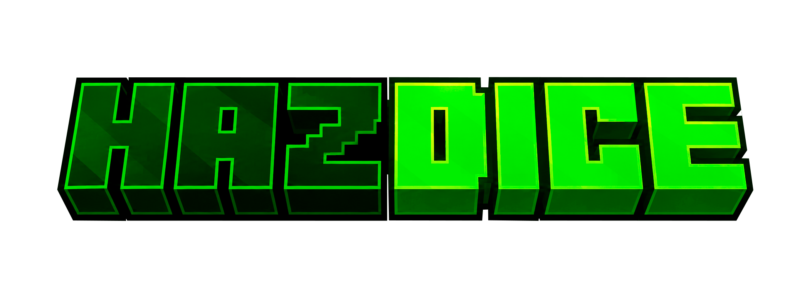

Сервер без правил. Выбивай боссов, собирай их души и куй артефакты в наковальне душ. Стройся, воюй, забирай чужое.
⧉ Как зайти на серверHAZDICE — это анархия. Тут нет привата, нет админа, который спасёт твой дом, и нет правил, которые кто-то соблюдает за тебя. Всё, что построишь, защищаешь сам.
Здесь не выживают тихо. Сюда приходят, чтобы оставить след — в виде крепости, которую не взять, или имени, которое запомнят те, кого ты победил.
Каждый бой имеет вес. Потерять снаряжение, лагерь или редкий артефакт — обычное дело, и именно это держит в напряжении с первой минуты. Никто не придёт на помощь по чату — здесь рассчитывают только на себя и тех, кому решили доверять сами.
Решай сам, кем тут быть: строителем, охотником на боссов или тем, кого боятся все.
Актуальная версия. Подключайся и играй.
Структуры, которых нет в ванильной игре. Свой лут, своя архитектура, свои опасности.
Общайся голосом прямо в игре — слышно тех, кто рядом. Работает на PlasmoVoice.
Главная механика HAZDICE — это цепочка. Победил босса → забрал душу → переплавил в наковальне душ → получил артефакт. Чем сильнее душа, тем ценнее награда.
Уникальные боссы со своими атаками. Бой сложный, но награда того стоит.
С каждого босса падает его душа — её не достать иначе.
Особая наковальня перерабатывает души в нечто осязаемое.
Финал цепочки. Редкая награда, ради которой и идёшь на боссов.
Артефакт — это предмет с особым эффектом, который нельзя купить или выбить из ванильного лута. Получить его можно только через наковальню душ, переплавив туда душу босса. Каждый артефакт даёт игроку постоянное преимущество, пока тот его держит при себе.
Нет, и это часть азарта. Наковальня душ не показывает результат до самого переплава — какой артефакт она выдаст, ты узнаешь только когда процесс завершится. Можно влиять на шансы через тир души, которую переплавляешь, но точный исход всегда остаётся загадкой.
Да. Как и любой предмет в инвентаре, артефакт можно выбить из тебя при смерти или забрать в бою. На анархии ничего не защищено навечно — если хочешь сохранить артефакт, придётся его охранять.
Сколько угодно — лимита нет. Чем больше боссов победишь и душ переплавишь, тем больше шансов собрать редкие артефакты разных тиров.
Мелкие механики, которые меняют привычный геймплей. Нажми на карточку, чтобы посмотреть, как это работает.
Запусти Minecraft 1.21.11, добавь сервер по IP и подключайся. Остальное узнаешь внутри.
Запусти Minecraft этой версии.
Для голосового чата на сервере. Скачать можно тут.
Вставь IP в список серверов.
Подключайся и начинай путь.